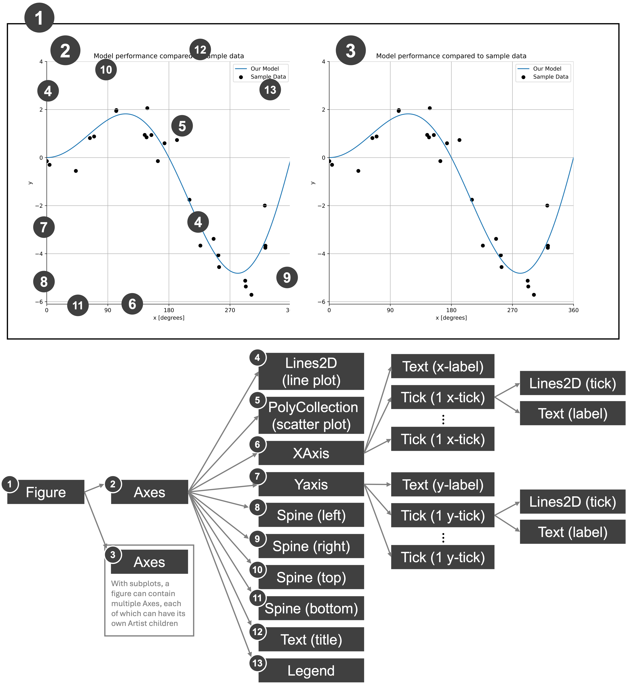

Under the hood of matplotlib#
Understanding how a tool works gives us far more flexibility in applying it. The power of matplotlib is its customizability, but you can do the most with it if you’re familiar with how it represents plot content.
Matplotlib evolved from an attempt to create an open source alternative to MATLAB, which was (and is) a popular, proprietary software platform for computational programming and data visualization.
You can think of how matplotlib works as having a canvas (a Figure) on which you can add content. Everything shown on a Figure is the result of what’s known as an Artist object. An artist is able to make the plots, axes, text, etc., that we want to place on our figure.
We can summarize all of this in the figure below, showing that each plot is made up of a hierarchy of Artists, each of which is built on collections of lines, polygons and text if you drill down far enough. The figure below shows all of the artists comprising a typical plot. the arrows connecting the different components point towards the children of some Artists. For example, an Axes can contain Artists for lines, and scatterplots, and the x- and y-axis itself, etc. The y-axis can then also contain Artists for the tick marks and the tick labels. Collectively, all of these add up to a plot. Once we have artist object, we can adjust it’s properties like, for a line, color, line width, line style, etc. The matplotlib model allows us to see all of these pieces and then set their properties to our preferences.
]
Every time we call a plotting function that places something onto the figure, it returns an artist. Let’s save the output of ax.plot() as lines. In the example below, lines is our Artist object that draws the lines on the plot.
%config InlineBackend.figure_format = 'retina'
import matplotlib.pyplot as plt
fig, ax = plt.subplots()
lines = ax.plot([1, 2, 3], [4, 5, 6])
lines
[<matplotlib.lines.Line2D at 0x12a46ac90>]
{kind=link}
The plot returns a list of Artists who’s first entry is <matplotlib.lines.Line2D at 0x12a46ac90>, which is a Line2D artist. The Line2D Artist is the only one since we just made that one plot. In this case, the Lines2D artist draws a two-dimensional collection of lines on an axes object. Each Artist has properties. Let’s take a look at the Lines2D properties - we can do this with the getp (get properties) method for matplotlib.
We need to access the artist using lines[0] since the plot method returns a list of Line2D artists (with one element in the list), so we need to access the first element in the list.
plt.getp(lines[0])
agg_filter = None
alpha = None
animated = False
antialiased or aa = True
bbox = Bbox(x0=1.0, y0=4.0, x1=3.0, y1=6.0)
children = []
clip_box = TransformedBbox( Bbox(x0=0.0, y0=0.0, x1=1.0, ...
clip_on = True
clip_path = None
color or c = #1f77b4
dash_capstyle = butt
dash_joinstyle = round
data = (array([1, 2, 3]), array([4, 5, 6]))
drawstyle or ds = default
figure = Figure(640x480)
fillstyle = full
gapcolor = None
gid = None
in_layout = True
label = _child0
linestyle or ls = -
linewidth or lw = 1.5
marker = None
markeredgecolor or mec = #1f77b4
markeredgewidth or mew = 1.0
markerfacecolor or mfc = #1f77b4
markerfacecoloralt or mfcalt = none
markersize or ms = 6.0
markevery = None
mouseover = False
path = Path(array([[1., 4.], [2., 5.], [3.,...
path_effects = []
picker = None
pickradius = 5
rasterized = False
sketch_params = None
snap = None
solid_capstyle = projecting
solid_joinstyle = round
tightbbox = Bbox(x0=102.54545454545453, y0=69.59999999999991, ...
transform = CompositeGenericTransform( TransformWrapper( ...
transformed_clip_path_and_affine = (None, None)
url = None
visible = True
window_extent = Bbox(x0=102.54545454545453, y0=69.59999999999991, ...
xdata = [1 2 3]
xydata = [[1. 4.] [2. 5.] [3. 6.]]
ydata = [4 5 6]
zorder = 2
There are MANY properties here, and you can learn more about these in the Line2D matplotlib documentation. You can also set or change these using code which can change the line that’s drawn in terms of its color, size, markerstyle, etc. If you ever want to know what you can and cannot change, simply call getp() to figure out what your options are. Let’s note a few of these properties and explore how to change them for this Line2D artist as an example:
color or c = #1f77b4
linestyle or ls = -
linewidth or lw = 1.5
marker = None
markeredgecolor or mec = #1f77b4
markeredgewidth or mew = 1.0
markerfacecolor or mfc = #1f77b4
markersize or ms = 6.0
We can set any number of these with the setp (set properties) function in the same way we used getp. Let’s try this by going wild and changing all the properties above:
fig, ax = plt.subplots()
lines = ax.plot([1, 2, 3], [4, 5, 6])
plt.setp(
lines,
color="red",
linestyle="--",
linewidth=6,
marker="s",
markeredgecolor="black",
markeredgewidth=3.0,
markerfacecolor="white",
markersize=12.0,
label="My line",
)
ax.set_ylabel("y")
ax.set_xlabel("x")
ax.set_title("My Plot")
Text(0.5, 1.0, 'My Plot')
{kind=link}
Lines are not the only Artists in matplotlib, here’s a list of the artists you’ve already encountered in your plots:
Artist |
Axes helper method to create the Artist |
|---|---|
|
|
|
|
|
|
|
|
But Artists are EVERYTHING on the plot including the Axes, XTick, YTick, etc. There is a hierarchy to these that you can access and then modify any parts of the plot that you’d like.
Similarly, figures and axes are Artists and we can get their properties. Let’s take a look at the Axes Artist properties:
plt.getp(ax)
adjustable = box
agg_filter = None
alpha = None
anchor = C
animated = False
aspect = auto
autoscale_on = True
autoscalex_on = True
autoscaley_on = True
axes_locator = None
axisbelow = line
box_aspect = None
children = [<matplotlib.lines.Line2D object at 0x12a53e1b0>, ...
clip_box = None
clip_on = True
clip_path = None
data_ratio = 0.9999999999999998
default_bbox_extra_artists = [<matplotlib.spines.Spine object at 0x12a4e2810>, ...
facecolor or fc = (1.0, 1.0, 1.0, 1.0)
figure = Figure(640x480)
frame_on = True
gid = None
gridspec = GridSpec(1, 1)
images = <a list of 0 AxesImage objects>
in_layout = True
label =
legend = None
legend_handles_labels = ([<matplotlib.lines.Line2D object at 0x12a53e1b0>]...
lines = <a list of 1 Line2D objects>
mouseover = False
navigate = True
navigate_mode = None
path_effects = []
picker = None
position = Bbox(x0=0.125, y0=0.10999999999999999, x1=0.9, y1=...
rasterization_zorder = None
rasterized = False
shared_x_axes = <matplotlib.cbook.GrouperView object at 0x12a4e350...
shared_y_axes = <matplotlib.cbook.GrouperView object at 0x12a469c7...
sketch_params = None
snap = None
subplotspec = GridSpec(1, 1)[0:1, 0:1]
tightbbox = Bbox(x0=19.722222222222214, y0=9.522222222222219, ...
title = My Plot
transform = IdentityTransform()
transformed_clip_path_and_affine = (None, None)
url = None
visible = True
window_extent = TransformedBbox( Bbox(x0=0.125, y0=0.109999999...
xaxis = XAxis(80.0,52.8)
xaxis_transform = BlendedGenericTransform( CompositeGenericTrans...
xbound = (0.9, 3.1)
xgridlines = <a list of 11 Line2D gridline objects>
xlabel = x
xlim = (0.9, 3.1)
xmajorticklabels = [Text(0.75, 0, '0.75'), Text(1.0, 0, '1.00'), Text...
xminorticklabels = []
xscale = linear
xticklabels = [Text(0.75, 0, '0.75'), Text(1.0, 0, '1.00'), Text...
xticklines = <a list of 22 Line2D ticklines objects>
xticks = [0.75 1. 1.25 1.5 1.75 2. ]...
yaxis = YAxis(80.0,52.8)
yaxis_transform = BlendedGenericTransform( BboxTransformTo( ...
ybound = (3.9, 6.1)
ygridlines = <a list of 11 Line2D gridline objects>
ylabel = y
ylim = (3.9, 6.1)
ymajorticklabels = [Text(0, 3.75, '3.75'), Text(0, 4.0, '4.00'), Text...
yminorticklabels = []
yscale = linear
yticklabels = [Text(0, 3.75, '3.75'), Text(0, 4.0, '4.00'), Text...
yticklines = <a list of 22 Line2D ticklines objects>
yticks = [3.75 4. 4.25 4.5 4.75 5. ]...
zorder = 0
This has a TON of properties, but they all describe aspects of the figure including the figure it resides in (‘figure’), the x- and y-tick labels (xticklabels and yticklabels), etc. Axes CONTAIN all of the Artists objects associated with a single plot. This hierarchical relationship makes the Axes the ‘parent’ object and each Artist component the ‘child’ object. Now let’s specifically see what the children of this Axes object are. So that we can talk about each one, let’s make a couple of tweaks to the plot, adding some additional titles, and coloring the center of the plot in light blue:
fig, ax = plt.subplots()
lines = ax.plot([1, 2, 3], [4, 5, 6])
plt.setp(
lines,
color="red",
linestyle="--",
linewidth=6,
marker="s",
markeredgecolor="black",
markeredgewidth=3.0,
markerfacecolor="white",
markersize=12.0,
label="My line",
)
ax.set_ylabel("y")
ax.set_xlabel("x")
ax.set_title("Center Title")
ax.set_title("Left Title", loc="left") # Title on the left
ax.set_title("Right Title", loc="right") # Title on the right
ax.set_facecolor("lightblue") # Sets the color of the center of the plot
{kind=link}
Now, let’s get the children of the Axes object:
plt.get(ax, "children")
[<matplotlib.lines.Line2D at 0x13c8c9a30>,
<matplotlib.spines.Spine at 0x13cdb8830>,
<matplotlib.spines.Spine at 0x13cdb9130>,
<matplotlib.spines.Spine at 0x13cae95b0>,
<matplotlib.spines.Spine at 0x13c893e00>,
<matplotlib.axis.XAxis at 0x13c8b1820>,
<matplotlib.axis.YAxis at 0x13c935580>,
Text(0.5, 1.0, 'Center Title'),
Text(0.0, 1.0, 'Left Title'),
Text(1.0, 1.0, 'Right Title'),
<matplotlib.legend.Legend at 0x13df9b3b0>,
<matplotlib.patches.Rectangle at 0x13c9bd9d0>]
This is a set of ALL of the components of our figure. The Line2D, as we already know, is our plotted line. The Spine elements are the lines representing lines bordering the axis (not including the ticks and tick labels). The XAxis and YAxis represent the corresponding ticks and tick labels, the text elements represent the possible placements of the title (left, center, or right), and finally, the rectangular patch represent the box area inside the plot (which we shaded light blue in this example to demonstrate these concepts).
For example, if we set the spines to not be visible (Artists 1,2,3,4 in the list above) and the blue rectangle (Artist 10 in the list above), we can remove them from the plot:
fig, ax = plt.subplots()
lines = ax.plot([1, 2, 3], [4, 5, 6])
plt.setp(
lines,
color="red",
linestyle="--",
linewidth=6,
marker="s",
markeredgecolor="black",
markeredgewidth=3.0,
markerfacecolor="white",
markersize=12.0,
label="My line",
)
ax.set_ylabel("y")
ax.set_xlabel("x", loc="right")
ax.set_title("Center Title")
ax.set_title("Left Title", loc="left") # Title on the left
ax.set_title("Right Title", loc="right") # Title on the right
ax.set_facecolor("lightblue") # Sets the color of the center of the plot
artists_to_remove = [1, 2, 3, 4, 10]
children_list = plt.get(ax, "children")
for artist in artists_to_remove:
plt.setp(children_list[artist], visible=False)
{kind=link}
plt.getp(item, "text")
''
So much of customizing plots is identifying plot elements and setting their properties. Sometimes we may need to iterate through a list of Line2D objects, or find the right child of an Artist to accomplish what we desire in the plot, but it’s typically achievable.
What can sometime be confusing is that Artists may be GROUPS of other artists. Let’s consider the XAxis in the above plot. It was the 6th element (index 5) in the list of children of the Axes object, and can also be accessed using the ax.xaxis accessor, which we can see points to the same thing:
plt.get(ax, "children")[5]
<matplotlib.axis.XAxis at 0x13df65f70>
ax.xaxis
<matplotlib.axis.XAxis at 0x13df65f70>
Let’s get the children of this element:
plt.getp(ax.xaxis, "children")
[Text(1, 48.0, 'x'),
Text(1, 50.77777777777778, ''),
<matplotlib.axis.XTick at 0x13dc88a40>,
<matplotlib.axis.XTick at 0x13dc88b60>,
<matplotlib.axis.XTick at 0x13c890980>,
<matplotlib.axis.XTick at 0x13c893fe0>,
<matplotlib.axis.XTick at 0x13c891bb0>,
<matplotlib.axis.XTick at 0x13c893bc0>,
<matplotlib.axis.XTick at 0x13cb10bf0>,
<matplotlib.axis.XTick at 0x13ce7b410>,
<matplotlib.axis.XTick at 0x13c94f4a0>,
<matplotlib.axis.XTick at 0x13c893560>,
<matplotlib.axis.XTick at 0x13c94d490>]
These represent the x-axis label (the first text element), and each of the ticks, which if we look at the children of the first XTick, we see that it consists of the lines that form the ticks themselves and the tick labels themselves:
plt.get(plt.get(ax.xaxis, "children")[2], "children")
[<matplotlib.lines.Line2D at 0x13d89b500>,
<matplotlib.lines.Line2D at 0x13d89b200>,
<matplotlib.lines.Line2D at 0x13d899700>,
Text(0.75, 0, '0.75'),
Text(0.75, 1, '0.75')]
We realize this is a lot of the mechanics of matplotlib. Often, errors result from not understanding how plots are formed and where properties need to be set to change components of the plot. If you want to change the color of the title of the plot, you need to set the color property for the text Artist to do so. You can’t set that in the function to create the plot itself.
Takeaways#
Understanding how matplotlib is structured “under the hood” allows you to better-understand how to use this tool and customize it.
Nearly all of the matplotlib objects you create be they lines, text, or otherwise, are typically Artists, which you can get the properties of with the
getpmethod to determine what can be adjusted. You can use this if you’re ever unsure of what can be changed about a particular component on the plot. Simple use theartist = ax.<method>()construct and then runplt.getp(artist)to get your list of properties (e.g. for line plots:artist=ax.plot(x,y)andplt.getp(artist))In many cases, you won’t need to dive this deeply, but having an understanding of the structure of matplotlib is empowering for innovation and creativity.
References#
John Hunter and Michael Droettboom. The Architecture of Open Source Applications (Volume 2). Chapter 11: matplotlib. 2012. Available at https://aosabook.org/en/v2/matplotlib.html